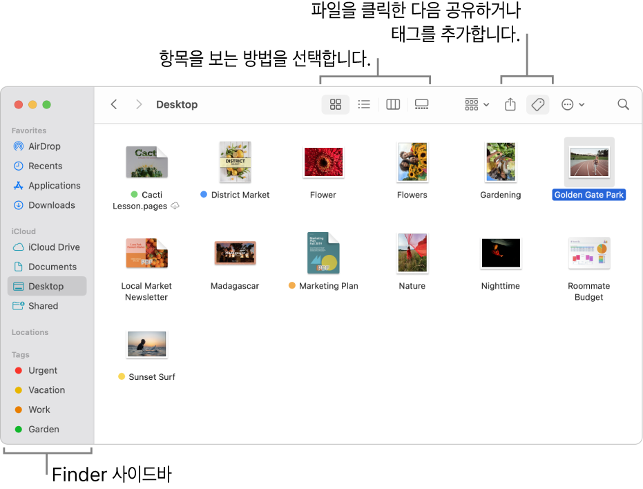
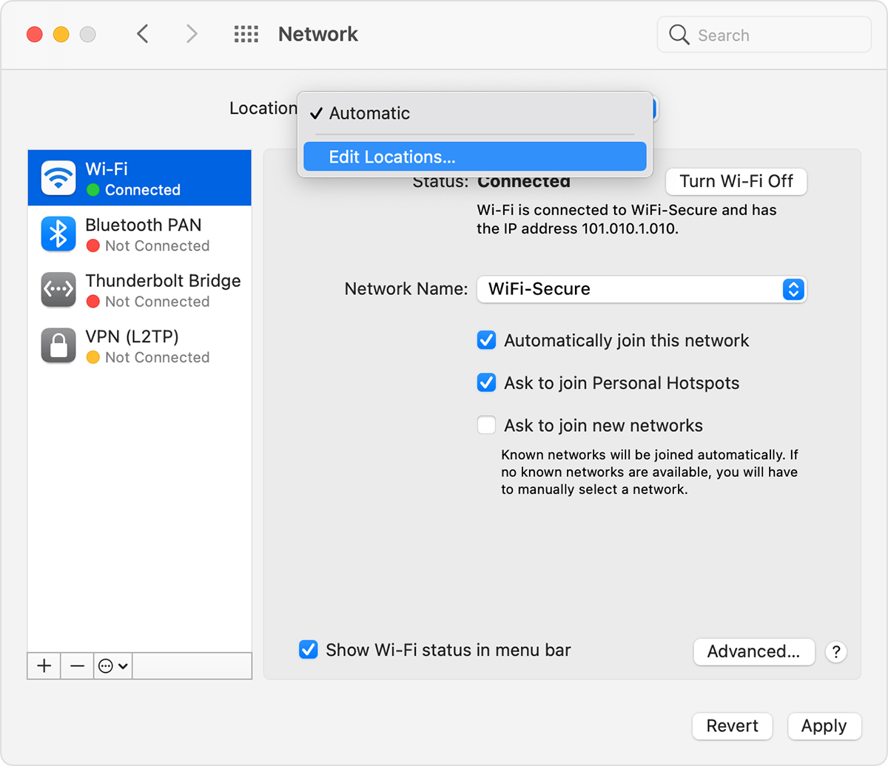
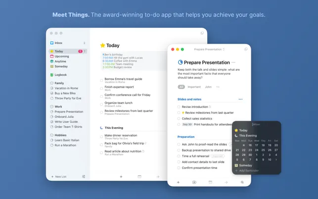

01 / APPLE FINDER메인 디자인 기준

회색 사이드바와 조용한 작업 화면
왼쪽 탐색과 본문이 한 창 안에서 붙어 있어. 선택 행은 작은 회색 면으로 표시하고, 상단 툴바는 낮게 유지해.
가져올 것 → 회색/흰색의 면 구분, 툴바 높이, 단순한 선택 행
차분한 회색 사이드바, 흰 작업 영역, 직선으로 나뉜 패널.
둥근 카드 중심의 화면을 맥 데스크톱 도구의 구조로 바꾸기 위한 네 가지 참고 화면.
Finder로 전체 톤을 잡고, Nova처럼 패널을 직선으로 연결해. 왼쪽 탭에는 macOS 네트워크 설정에서 가져온 작은 상태 점을 붙이면 돼.
실제 macOS에도 둥근 창과 버튼은 있어. 회색 톤·툴바·분할 구조를 참고하고, 내부 요소의 모서리는 직각으로 재해석하는 방향이야. 아래 치수·색은 프로젝트 적용을 위한 제안이야.

왼쪽 탐색과 본문이 한 창 안에서 붙어 있어. 선택 행은 작은 회색 면으로 표시하고, 상단 툴바는 낮게 유지해.

이전 macOS 네트워크 환경설정의 왼쪽 목록에서 실제 색상 점을 볼 수 있어. 요청한 탭 표시와 가장 직접적으로 닮은 레퍼런스야.

여러 영역을 1px 선과 배경 차이로 나눠. 기존 화면의 왼쪽 탐색·중앙 상담·오른쪽 출처 구조에 가져오기 좋아.

핵심 정보가 문서처럼 읽혀. 추천 질문과 학사 일정을 얇은 구분선 아래에 정돈하는 참고로 쓰면 돼.
참고 화면은 원 제작자의 이미지야. 네이티브 macOS의 둥근 외곽이나 테마 전체를 그대로 적용하는 제안은 아니야.
작은 제목과 목록으로 본문을 정리해.
radius: 0. 상태 점만 원형.